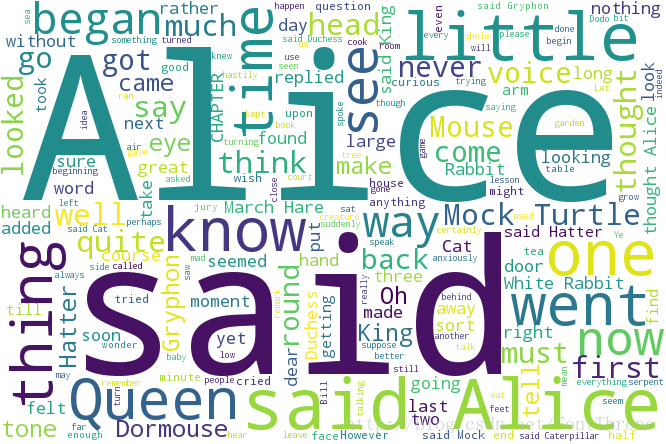
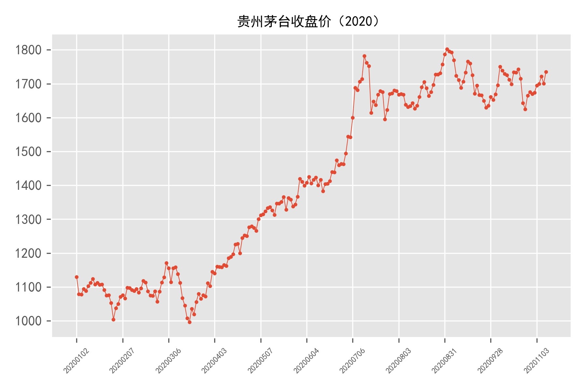
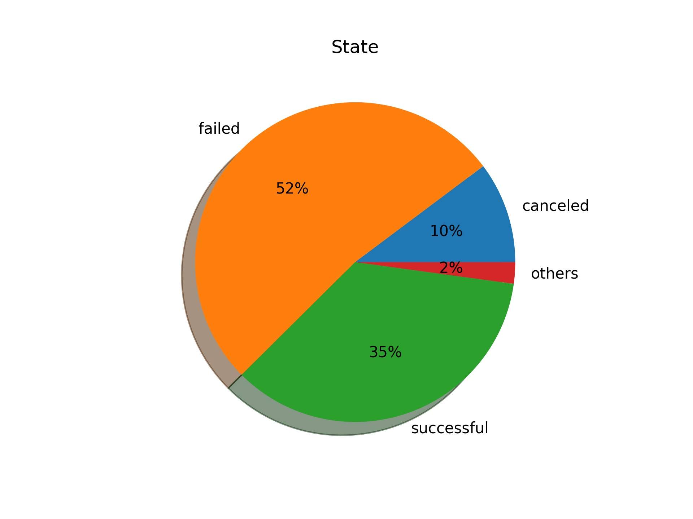

Python Programming
Lecture 12 Wordcloud, Web API
12.1 Wordcloud & Encoding

- A long string
from matplotlib import pyplot as plt
from wordcloud import WordCloud
string = 'Importance of relative word frequencies for font-size.
With relative_scaling=0, only word-ranks are considered. With
relative_scaling=1, a word that is twice as frequent will have
twice the size. If you want to consider the word frequencies
and not only their rank, relative_scaling around .5 often looks good.'
font = r'C:\Windows\Fonts\Arial.TTF'
wc = WordCloud(font_path=font, #如果是中文必须要添加这个，否则会显示成框框
background_color='white',
width=1000,
height=800,
).generate(string)
wc.to_file('s1.png') #保存图片
plt.imshow(wc) #用plt显示图片
plt.axis('off') #不显示坐标轴
plt.show() #显示图片
- Loading text file
from matplotlib import pyplot as plt
from wordcloud import WordCloud
filename = 'Harry Potter.txt'
with open(filename , encoding="utf-8") as f_obj:
contents = f_obj.read()
font = r'C:\Windows\Fonts\Arial.TTF'
wc = WordCloud(font_path=font,
background_color='white',
width=1000,
height=800,
).generate(contents)
wc.to_file('s2.png')
plt.imshow(wc)
plt.axis('off')
plt.show()
- Loading Chinese text file
from matplotlib import pyplot as plt
from wordcloud import WordCloud
filename = 'sanguo.txt'
with open(filename , encoding="utf-8") as f_obj:
contents = f_obj.read()
font = r'C:\Windows\Fonts\simkai.ttf'
wc = WordCloud(font_path=font,
background_color='white',
width=1000,
height=800,
).generate(contents)
wc.to_file('s3.png')
plt.imshow(wc)
plt.axis('off')
plt.show()
- Using jieba
from matplotlib import pyplot as plt
from wordcloud import WordCloud
import jieba
filename = 'sanguo.txt'
with open(filename , encoding="utf-8") as f_obj:
contents = f_obj.read()
s = jieba.lcut(contents)
txt = " ".join(s)
print(txt)
font = r'C:\Windows\Fonts\simkai.ttf'
wc = WordCloud(font_path=font,
background_color='white',
width=1000,
height=800,
).generate(txt)
wc.to_file('s4.png')
plt.imshow(wc)
plt.axis('off')
plt.show()
Character Encoding: ASCII, Unicode, UTF-8, , GBK
- Two-dimensional code, QR code
import qrcode
img=qrcode.make("Hello!")
img.save("x.png")
import qrcode
img=qrcode.make("http://wangwanglulu.cn/teaching/")
img.save("x.png")
12.2 Web API
Web API
import requests
url = "http://t.weather.itboy.net/api/weather/city/101020100"
r = requests.get(url)
print(r.status_code)
response_dict = r.json()
f = response_dict['data']
ff = f['forecast']
ff_today = ff[0]
ff_1 = ff[1]
ff_2 = ff[2]
def show(day):
for x in day:
print(x+': '+str(day[x]))
print('\n')
show(ff_today)
show(ff_1)
show(ff_2)
import requests
KEY = '' # 这里填拿到的key
def get_response(msg):
apiUrl = 'http://www.tuling123.com/openapi/api'
data = {
'key' : KEY,
'info' : msg,
'userid' : '路老师',
}
try:
r = requests.post(apiUrl, data=data).json()
return r.get('text')
except:
return None
print(get_response('你好'))
GitHub
https://api.github.com/search/repositories?q=language:python&sort=stars
url = 'https://api.github.com/search/repositories?q=language:python&sort=stars'
import requests
# Make an API call and store the response.
r = requests.get(url)
print("Status code:", r.status_code)
# Store API response in a variable.
response_dict = r.json()
print(response_dict.keys())
Status code: 200
dict_keys(['total_count', 'incomplete_results', 'items'])
- Working with the Response Dictionary
import requests
url = 'https://api.github.com/search/repositories?q=language:python&sort=stars'
# Make an API call and store the response.
r = requests.get(url)
print("Status code:", r.status_code)
# Store API response in a variable.
response_dict = r.json()
print("Total repositories:", response_dict['total_count'])
# Explore information about the repositories.
repo_dicts = response_dict['items']
print("Repositories returned:", len(repo_dicts))
# Examine the first repository.
repo_dict = repo_dicts[0]
print("\nKeys:", len(repo_dict))
for key in sorted(repo_dict.keys()):
print(key)
print("\nSelected information about first repository:")
print('Name:', repo_dict['name'])
print('Owner:', repo_dict['owner']['login'])
print('Stars:', repo_dict['stargazers_count'])
print('Repository:', repo_dict['html_url'])
print('Created:', repo_dict['created_at'])
print('Updated:', repo_dict['updated_at'])
print('Description:', repo_dict['description'])
Status code: 200
Total repositories: 3675320
Repositories returned: 30
Selected information about first repository:
Name: public-apis
Owner: toddmotto
Stars: 57212
Repository: https://github.com/toddmotto/public-apis
Created: 2016-03-20T23:49:42Z
Updated: 2019-05-22T09:34:50Z
Description: A collective list of free APIs for use in software and web development.
- Visualizing Repositories Using Plotly
import requests
from plotly.graph_objs import Bar
from plotly import offline
URL = 'https://api.github.com/search/repositories?q=language:python&sort=star'
r = requests.get(URL)
print("Status code:", r.status_code)
response_dict = r.json()
print("Total repositories:", response_dict['total_count'])
repo_dicts = response_dict['items']
names, stars = [], []
for repo_dict in repo_dicts:
names.append(repo_dict['name'])
stars.append(repo_dict['stargazers_count'])
- Make visualization
data = [{
'type': 'bar', 'x': repo_links,'y': stars,
'marker': {'color': 'rgb(60, 100, 150)',
'line': {'width': 1.5, 'color': 'rgb(25, 25, 25)'}
},
'opacity': 0.6,
}]
my_layout = {
'title': 'Most-Starred Python Projects on GitHub',
'titlefont': {'size': 28},
'xaxis': {'title': 'Repository',
'titlefont': {'size': 24},
'tickfont': {'size': 14},
},
'yaxis': {'title': 'Stars',
'titlefont': {'size': 24},
'tickfont': {'size': 14},
},
}
fig = {'data': data, 'layout': my_layout}
offline.plot(fig, filename='python_repos.html')
Where to find Web API?
Stock Market (股票市场)
url="http://img1.money.126.net/data/hs/kline/day/history/2020/1399001.json"
- 代码为股票代码，上海股票前加0，如600756变成0600756，深圳股票前加1
- 大盘指数数据查询：上证指数000001前加0，沪深300指数000300股票前加0，深证成指399001前加1，中小板指399005前加1，创业板指399006前加1
- 是否复权，不复权为kline，复权为klinederc
贵州茅台
url="http://img1.money.126.net/data/hs/kline/day/history/2020/0600519.json"
import requests
import matplotlib.pyplot as plt
r = requests.get(url)
print(r.status_code)
response_dict = r.json()
# print(response_dict)
data = response_dict['data']
for x in data[:5]:
print("""日期: {}，开盘价：{}，收盘价：{}，最高价：{}
最低价：{}，交易量：{}，涨幅跌幅：{}""".format(x[0],\
x[1], x[2], x[3], x[4], x[5], x[6]))
200
日期: 20200102，开盘价：1128.0，收盘价：1130.0，最高价：1145.06
最低价：1116.0，交易量：14809916，涨幅跌幅：-4.48
日期: 20200103，开盘价：1117.0，收盘价：1078.56，最高价：1117.0
最低价：1076.9，交易量：13031878，涨幅跌幅：-4.55
日期: 20200106，开盘价：1070.86，收盘价：1077.99，最高价：1092.9
最低价：1067.3，交易量：6341478，涨幅跌幅：-0.05
日期: 20200107，开盘价：1077.5，收盘价：1094.53，最高价：1099.0
最低价：1076.4，交易量：4785359，涨幅跌幅：1.53
日期: 20200108，开盘价：1085.05，收盘价：1088.14，最高价：1095.5
最低价：1082.58，交易量：2500825，涨幅跌幅：-0.58
date=[]; open_p=[]; close_p=[]; high=[]
low=[]; volume=[]; percent=[]
for y in data:
date.append(y[0]); open_p.append(y[1])
close_p.append(y[2]); high.append(y[3])
low.append(y[4]); volume.append(y[5])
percent.append(y[6])
plt.rcParams['font.sans-serif'] = ['SimHei']
plt.style.use('ggplot')
plt.plot(close_p, linewidth=0.5)
plt.scatter(date,close_p, s=5)
plt.xticks(date[::20],rotation=45,fontsize=6)
plt.title('贵州茅台收盘价（2020）',fontsize=10)
plt.tight_layout()
plt.savefig('maotai2020.jpg',dpi=300)

- Batch Data Visualization
import os
import requests
import matplotlib.pyplot as plt
def stock_visual(url):
r = requests.get(url)
print(r.status_code)
response_dict = r.json()
data = response_dict['data']
date=[];close_p=[]
for y in data:
date.append(y[0])
close_p.append(y[2])
return date,close_p
exist=os.path.exists('figures')
if not exist:
os.mkdir('figures')
os.chdir('figures')
stock_list = ["0600519","0600520","0600521"]
for x in stock_list:
url = "http://img1.money.126.net/data/hs/kline/day/history/2020/{}.json".format(x)
x_date, x_close = stock_visual(url)
plt.style.use('ggplot')
plt.plot(x_close, linewidth=0.5)
plt.scatter(x_date,x_close, s=5)
plt.xticks(x_date[::20],rotation=45,fontsize=6)
plt.title(x+'(2020)',fontsize=10)
plt.tight_layout()
plt.savefig(x+'.jpg',dpi=300)
plt.close()

-
Python Crash Couse (Chapters we do not cover: Chapter 12 - 14, 18 - 20)
-
Chapter 12 -14: Alien Invasion
-
Chapter 18 - 20: Django
-
-
Python for Everybody (Chapters we do not cover: Chapter 11 - 13, 15 - 16)
-
Chapter 11: Regualer Expressions
-
Chapter 12: Networked Programs 12.4 - 12.8 (urlib, BeautifulSoup)
-
Chapter 13: Using Web Services (XML, JSON, API)
-
Chapter 15: Databases and SQL
-
Chapter 16: Visualizing data (Network, Word Cloud)
-
12.3 Example: Crowdfunding
Data of Crowdfunding Projects
Kickstarter Projects from Kaggle.com
- Loading Data
import csv
filename = 'ks-projects-201801.csv'
with open(filename) as f:
reader = csv.reader(f) #It is an iterator
header_row = next(reader)
print(header_row)
for index, column_header in enumerate(header_row): #enumerate
print(index, column_header)
['ID', 'name', 'category', 'main_category', 'currency', 'deadline', 'goal', 'launched',
'pledged', 'state', 'backers', 'country', 'usd pledged', 'usd_pledged_real', 'usd_goal_real']
- Successful and Failed
import csv
filename = 'ks-projects-201801.csv'
with open(filename,encoding="utf-8") as f:
reader = csv.reader(f) #It is an iterator
header_row = next(reader)
state=[]
for row in reader:
state.append(row[9])
from itertools import groupby
state.sort()
percentage={}
for key, value in groupby(state):
percentage[key]=len(list(value))/len(state)
per=[]; labels=[]
for x, y in percentage.items():
if y > 0.01:
per.append(y)
labels.append(x)
per.append(1-sum(per))
labels.append("others")
import matplotlib.pyplot as plt
explode=[0]*len(labels)
plt.pie(per, labels=labels,\
explode=explode, autopct='%.0f%%',shadow=True)
plt.title("State", loc='center')
plt.savefig('state.jpg',dpi=300)

- Practice: Classify those projects by their category and draw a pie chart.
Summary
- Wordcloud
- API
- Reading: Python Crash Course, Chapter 17